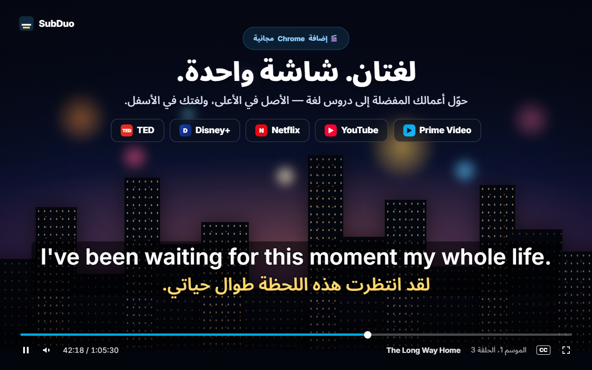
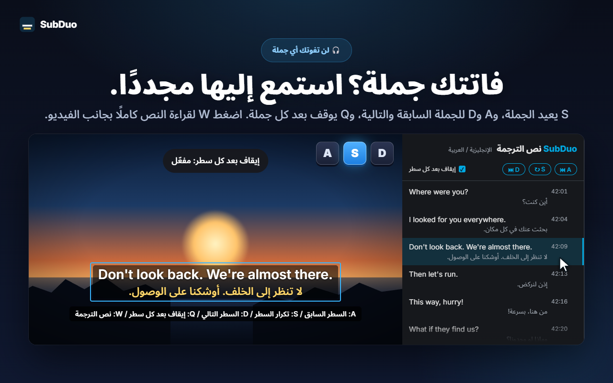
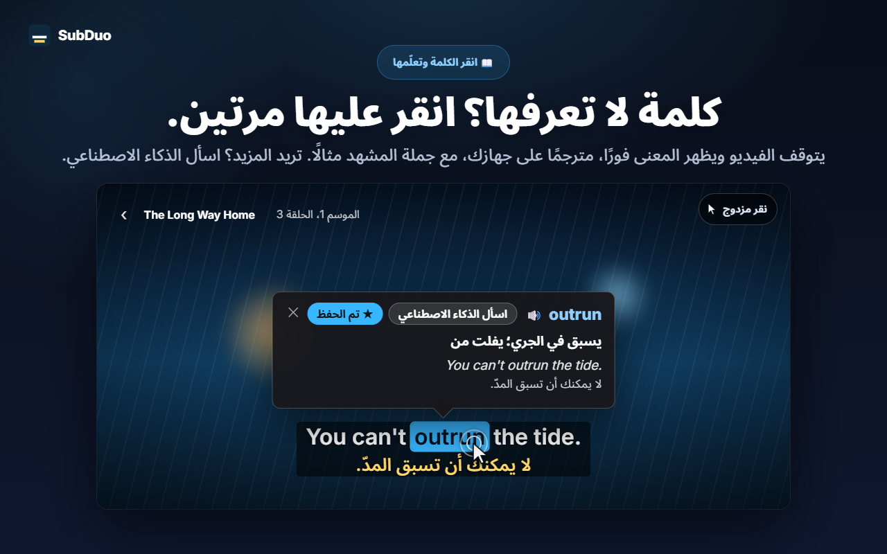
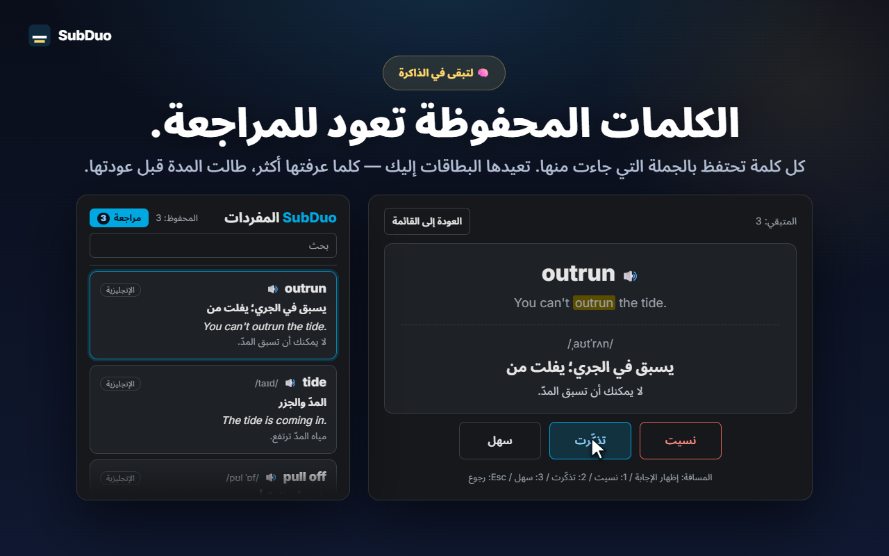

أي لغتين للترجمة
يُكتشف كل مسار ترجمة يوفره الموقع عند تشغيل الفيديو، بما في ذلك الترجمة المُنشأة تلقائيًا على YouTube. اختر لغة لكل سطر، أو أخفِ أحدهما.
يعرض SubDuo الترجمة النصية بلغتين في الوقت نفسه: اللغة الأصلية في الأعلى ولغتك في الأسفل. انقر مرتين على كلمة لترى معناها، وأعد أي سطر بمفتاح واحد، واحتفظ بما تتعلمه في قائمة مفردات مدمجة.
يستخدم الترجمات النصية التي يوفرها كل موقع · بلا حساب · تبقى الترجمة النصية في متصفحك
مشغّلات البث تعرض لغة ترجمة واحدة في كل مرة. يضيف SubDuo لغة ثانية، ومعها الأدوات التي تتعلم بها.
لقطات من الإضافة، معروضة بلغتك.

اختر أي لغتين من مسارات الترجمة التي يوفرها العمل: الأصلية في الأعلى ولغتك في الأسفل. اسحب الترجمة إلى أي مكان، ومرّر العجلة فوق سطر لتغيير حجمه، وانقر بالزر الأيمن لتغيير الألوان أو الشفافية أو التمويه.

اضغط S لتكرار السطر، وA وD للرجوع والتقدم، وQ للإيقاف تلقائيًا بعد كل سطر. اضغط W لفتح نص الترجمة في اللوحة الجانبية في Chrome، باللغتين سطرًا بسطر، وانقر على أي صف للانتقال إليه.

يتوقف الفيديو وتعرض بطاقة المعنى فورًا، مترجمًا على جهازك بمترجم Chrome المدمج، مع جملة المشهد نفسها مثالًا. لتحديد عبارة استخدم Alt+سحب. واضغط «اسأل الذكاء الاصطناعي» لمعرفة المعنى بحسب السياق والنطق وجملة مثال.

كل كلمة تحفظها تحتفظ بالسطر الذي جاءت منه. ابحث في قائمة مفرداتك وصفِّها، واستمع إلى النطق، وراجع بالبطاقات التعليمية: كلما أتقنت الكلمة، طالت المدة قبل أن تعود.
لا حساب ولا شاشات إعداد. ثبّته واضغط تشغيل.
ثبّت SubDuo من سوق Chrome الإلكتروني، ثم شغّل فيديو على Prime Video أو YouTube أو Netflix أو Disney+ أو TED.
انقر أيقونة SubDuo واختر لغة ترجمة للسطر العلوي وأخرى للسفلي. لا تظهر في القائمة إلا المسارات التي يوفرها العمل.
انقر مرتين على الكلمات لمعرفة معانيها، واضغط A أو S أو D لإعادة الأسطر، وافتح قائمة مفرداتك من النافذة المنبثقة.
صُممت لمن يتعلم بالمشاهدة، ويريد أن تبقى الترجمة بعيدة عن طريقه حتى يحتاج إليها.
يُكتشف كل مسار ترجمة يوفره الموقع عند تشغيل الفيديو، بما في ذلك الترجمة المُنشأة تلقائيًا على YouTube. اختر لغة لكل سطر، أو أخفِ أحدهما.
انقر مرتين على كلمة أو استخدم Alt+نقر، أو حدّد عبارة باستخدام Alt+سحب. يتوقف التشغيل وتظهر الترجمة فوق الفيديو، وتتم على جهازك.
المعنى بحسب السياق والنطق وجملة مثال، بلغة العرض التي اخترتها. حتى 20 شرحًا يوميًا مجانًا.
احفظ الكلمات بنقرة، وابحث فيها، وصفِّها بحسب اللغة، واستمع إليها عبر 🔊. تباعد البطاقات التعليمية بين مرات ظهور الكلمات التي تعرفها جيدًا.
اضغط A للسطر السابق، وS للتكرار، وD للتالي. ويوقف Q التشغيل بعد كل سطر. موّه أحد السطرين لتختبر نفسك، ثم أشر إليه للتحقق.
كل الأسطر باللغتين بجانب الفيديو. يُميَّز السطر الحالي، وانقر أي صف للانتقال إليه. اضغط W لفتحه.
اسحب للتحريك، ومرّر لتغيير حجم السطر، واستخدم الأسهم للضبط الدقيق، مع محاذاة لليسار أو الوسط أو اليمين. انقر بالزر الأيمن لضبط اللون والشفافية والتمويه لكل سطر.
ترجمة كبيرة على YouTube وهادئة على Netflix: تُحفظ الإعدادات لكل موقع وتُزامن عبر Chrome.
تستخدم القوائم والترجمات وشروح الذكاء الاصطناعي لغة العرض التي تختارها، ويمكن أن تختلف عن لغة Chrome.
يقرأ SubDuo ملفات الترجمة التي يرسلها كل موقع إلى متصفحك أصلًا ويعرضها هناك. الشيء الوحيد الذي يرسله إلى الخارج هو عبارة تختار أن تسأل الذكاء الاصطناعي عنها، مع سطر الترجمة الخاص بها.
تُحلَّل الترجمة النصية وتُعرض في متصفحك. لا تُرسل إعداداتك وقائمة مفرداتك وسجل مشاهدتك إلى المطوّر. وتتم ترجمة الكلمات على جهازك بمترجم Chrome المدمج.
عند الضغط على «اسأل الذكاء الاصطناعي»، تُرسل العبارة المحددة وسطر الترجمة الخاص بها والسطر الآخر الظاهر على الشاشة ورموز اللغات ومعرّف جهاز عشوائي (لحساب الحد اليومي) إلى خادم SubDuo، الذي يطلب الشرح من OpenAI. ويُعالَج عنوان IP الخاص بك لتشغيل الخدمة.
لا يوجد ما تشترك فيه. لا تحتوي الإضافة على أي إعلانات أو أدوات تحليل.
تحتاج الإضافة إلى «storage» للإعدادات والمفردات، و«scripting» لإعادة الاتصال بعلامات التبويب المفتوحة بعد التحديثات، و«sidePanel» لنص الترجمة، إضافة إلى الوصول إلى المواقع الخمسة المدعومة فقط.
يُثبَّت من سوق Chrome الإلكتروني في ثوانٍ